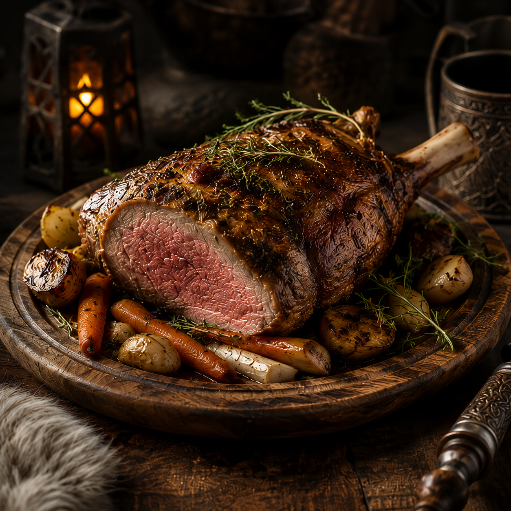
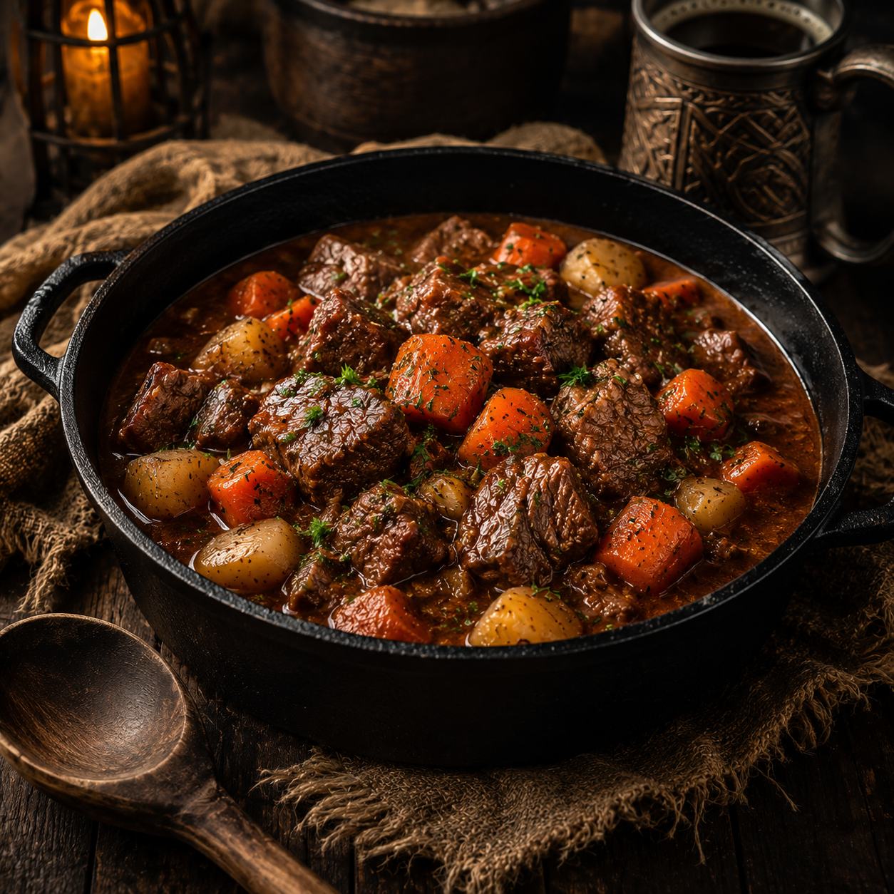
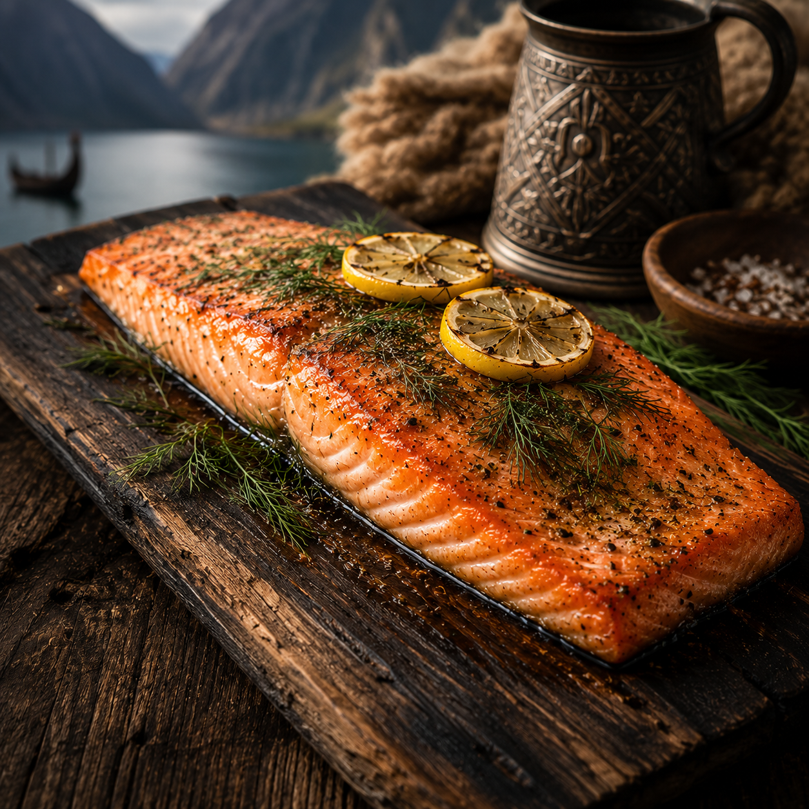
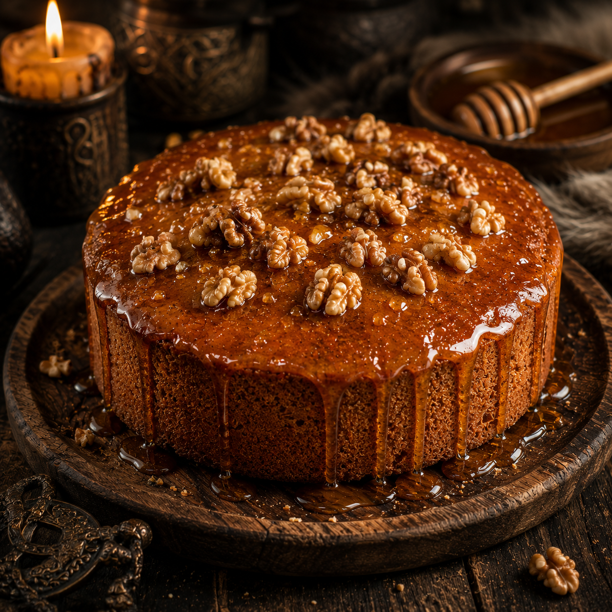

Welcome, warrior!
Has a long day of pillaging distant shores left you hungry for a proper feast?
Then pull up a bench, grab a horn of mead, and feast like the Allfather intended.
The Jarl's Roast Lamb
Celebrate a successful raid

Berserker’s Stew
Fortifies before or after battle

Fjordfire Salmon
Forget about the freezing North Sea

Odin's Honey Cake
Trusted by gods since 793
